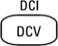
Configure DC voltage measurements, including DCV ratio measurements:
Range: Autorange (default), 100 mV, 1 V, 10 V, 100 V, or 750 V
Aperture NPLC: 0.02, 0.2, 1, 10, 100. Default: 10 (34460A/61A)
0.02, 0.06, 0.2, 1, 10, 100. Default: 10 (34465A/70A without DIG option)
0.001, 0.002, 0.006, 0.02, 0.06, .2, 1, 10, 100. Default: 10 (34465A/70A with DIG option)
See Range, Resolution and NPLC for more information.
Aperture Time (applies only to the 34465A and 34470A): (Without the DIG option) 200 µs to 1 s (2 µs resolution), default: 100 ms. (With the DIG option) 20 µs to 1 s (2 µs resolution), default: 100 ms.
Auto Zero: Off or On (default)
Input Z: 10 MΩ (default) or HighZ (> 10 GΩ)
DCV Ratio: Off (default) or On
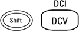
Configure DC current measurements:
Terminals: 3 A or 10 A
Range: Auto, 100 µA, 1 mA, 10 mA, 100 mA, 1 A, 3 A, or 10 A (when terminals set to 10 A). The 34465A and 34470A have additional 1 µA and 10 µA DC current ranges.
Aperture NPLC: 0.02, 0.2, 1, 10, 100. Default: 10 (34460A/61A)
0.02, 0.06, 0.2, 1, 10, 100. Default: 10 (34465A/70A without DIG option)
0.001, 0.002, 0.006, 0.02, 0.06, .2, 1, 10, 100. Default: 10 (34465A/70A with DIG option)
See Range, Resolution and NPLC for more information.
Aperture Time (applies only to the 34465A and 34470A): (Without the DIG option) 200 µs to 1 s (2 µs resolution), default: 100 ms. (With the DIG option) 20 µs to 1 s (2 µs resolution), default: 100 ms.
Auto Zero: Off or On (default)
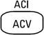
Configure AC voltage measurements:
Range: Autorange (default), 100 mV, 1 V, 10 V, 100 V, or 750 V
Filter: >3 Hz, >20 Hz, >200 Hz
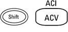
Configure AC current measurements:
Terminals: 3 A or 10 A
Range: Auto, 100 µA, 1 mA, 10 mA, 100 mA, 1 A, 3 A, or 10 A (when terminals set to 10 A)
Filter: >3 Hz, >20 Hz, >200 Hz
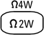
Configure 2-wire resistance measurements:
Range: 100 Ω, 1 kΩ, 10 kΩ, 100 kΩ, 1 MΩ, 10 MΩ, 100 MΩ, 1 GΩ (34465A and 34470A only) or Auto (default). Note: The approximate current sourced for each range (for example, ~1mA) is shown on each range softkey.
Aperture NPLC: 0.02, 0.2, 1, 10, 100. Default: 10 (34460A/61A)
0.02, 0.06, 0.2, 1, 10, 100. Default: 10 (34465A/70A without DIG option)
0.001, 0.002, 0.006, 0.02, 0.06, .2, 1, 10, 100. Default: 10 (34465A/70A with DIG option)
See Range, Resolution and NPLC for more information.
Aperture Time (applies only to the 34465A and 34470A): (Without the DIG option) 200 µs to 1 s (2 µs resolution), default: 100 ms. (With the DIG option) 20 µs to 1 s (2 µs resolution), default: 100 ms.
Auto Zero: Off or On (default)
OffstComp: Off (default) or ON. Applies only to the 34465A and 34470A.
Low Power: Disables (Off) or enables (On) low power measurements. Applies only to the 34465A and 34470A.
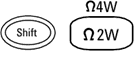
Configure 4-wire resistance measurements.
Range: 100 Ω, 1 kΩ, 10 kΩ, 100 kΩ, 1 MΩ, 10 MΩ, 100 MΩ, 1 GΩ (34465A and 34470A only) or Auto (default). Note: The approximate current sourced for each range (for example, ~1mA) is shown on each range softkey.
Aperture NPLC: 0.02, 0.2, 1, 10, 100. Default: 10 (34460A/61A)
0.02, 0.06, 0.2, 1, 10, 100. Default: 10 (34465A/70A without DIG option)
0.001, 0.002, 0.006, 0.02, 0.06, .2, 1, 10, 100. Default: 10 (34465A/70A with DIG option)
See Range, Resolution and NPLC for more information.
Aperture Time (applies only to the 34465A and 34470A): (Without the DIG option) 200 µs to 1 s (2 µs resolution), default: 100 ms. (With the DIG option) 20 µs to 1 s (2 µs resolution), default: 100 ms.
OffstComp: Off (default) or ON. Applies only to the 34465A and 34470A.
Low Power: Disables (Off) or enables (On) low power measurements. Applies only to the 34465A and 34470A.
Configure frequency and period measurements. Parameters include range, AC filter, and gate time.
Range: 100 mV, 1 V, 10 V, 100 V, 750 V, Auto (default)
Filter: >3 Hz, >20 Hz, >200 Hz
Gate Time: 10 ms, 100 ms (default), or 1 s
Timeout: 1 s (default) or Auto

Configure capacitance measurements:
Range: 1 nF, 10 nF, 100 nF, 1 µF, 10 µF, 100 µF, or Auto (default)
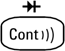
Configure continuity measurements:
Beeper: Off or On (default)
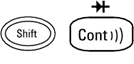
Configure diode measurements:
Beeper: Off or On (default)
Configure 2-wire and 4-wire temperature measurements.
Probe Settings: RTD 2w, RTD 4w (default), Thermis2w, Thermis4w, TCouple (34465A/70A only)
Additional settings for probe type RTD 2w or RTD 4w:
- R0: R0 is the nominal resistance of an RTD at 0 °C. Default 100 Ω
- Low Power: Disables (Off) or enables (On) low power measurements. Applies only to the 34465A and 34470A.
Additional settings for probe type Thermis2w and Thermis4w:
- Low Power: Disables (Off) or enables (On) low power measurements. Applies only to the 34465A and 34470A.
Additional settings for probe type TCouple:
- Type: J (default), K, E, T, N, or R
- Reference: Internal or Fixed
- Offset Adjust:(Available for an internal reference only). -20 °C to +20 °C. Default: 0 °C.
- Fixed Offset: (Available for a fixed reference only)-20 °C to +80 °C. Default: 0 °C.
Aperture NPLC: 0.02, 0.2, 1, 10, 100. Default: 10 (34460A/61A)
0.02, 0.06, 0.2, 1, 10, 100. Default: 10 (34465A/70A without DIG option)
0.001, 0.002, 0.006, 0.02, 0.06, .2, 1, 10, 100. Default: 10 (34465A/70A with DIG option)
See Range, Resolution and NPLC for more information.
Aperture Time (applies only to the 34465A and 34470A): (Without the DIG option) 200 µs to 1 s (2 µs resolution), default: 100 ms. (With the DIG option) 20 µs to 1 s (2 µs resolution), default: 100 ms.
Auto Zero: Off or On (default) (2-wire measurements only; not available for 4-wire measurements)
OffstComp: Off (default) or ON. (RTD 2-wire and RTD 4-wire measurements only)
Open Check: TCouple measurements only.*
Units: °C, °F, or K
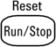
Start and stop measurements.
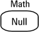


Store and recall instrument states and preferences.
Configure I/O interfaces: LAN (optional on 34460A), USB, GPIB (optional).
Perform system administration tasks, including calibration.
Configure user preferences.
Perform file management activities, including the creation of "screen shot" files (display images).

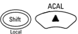
Return to local control of the instrument (when in Remote mode), or indicate that the next front panel key will be "shifted," for example [Probe Hold] instead of [Single].